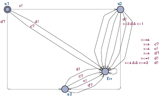

Urpal takes an Uppaal model as input, performs manipulations as described
by a simple command language, and writes the resulting model back to a
file. Its prime feature is the ability to construct a testing automaton
for determining timed trace inclusion for a restricted class of timed
automata. Uppaal can also: duplicate automata; create automata ready to
accept all synchronisations on a set of channels; prune transitions
based on their action label; conflate, drop and rename locations; and
scale the graphical layout of a model. More details are in the manual page.
Descriptions of the testing construction can be found in:
The thesis
of Mariëlle
Stoelinga, specifically Chapter 7 and Appendix A.
Development on Urpal began from the descriptions therein at the
suggestion of Frits
Vaandrager.
The program should produce a model
urpal-example-after.xml that can be opened in Uppaal.
The new model
should contain the original Template automaton and a new
Test automaton.
After tidying up the labels, the latter should resemble:

One good way to verify the result is to model check the original
automaton against the generated test automaton, which
also exposes models that are not deterministic.
This would be done for the above example by first changing the system
declaration to: system Template, Test;, then
verifying the formula: A[] (not Test.Err).
Such tests have previously revealed faults in Urpal.
Another test is to verify that no new deadlocks are introduced, as
Test automata are always ready to synchronize.
Since there are already two possibilities for deadlock in the example,
the formula is:
A[] (deadlock imply ((Template.s2 and Template.x >=3 and Template.x < 4) or Template.s3))
The layout routines rarely give perfect results, but they
usually make the basic structure clear enough so that sense can be made
of counter-example traces, and they are a reasonable starting point for
manual rearrangement of label positions (the transition nails make other
changes painful). If the results are very poor, try:
Scaling the source model before generating the test automaton.
For example, Test=maketest(scale(Template, 2.0)).
Tabulating the labels on transitions to the error state.
For example, Test=tabulate(maketest(Template), {Err}).
Trying different Graphviz layout routines.
For example, either fdp --set=graphviz{engine=fdp}
or the other spring-based approach neato
--set=graphviz{engine=neato}.
Usually one will give better results than the other for a
particular model.
Various combinations of the above.
Ultimately, manual rearranging the original automaton or the
resulting test automaton is sometimes the only satisfactory
approach.
Scaling the model and using the tabulate feature
can make it easier.